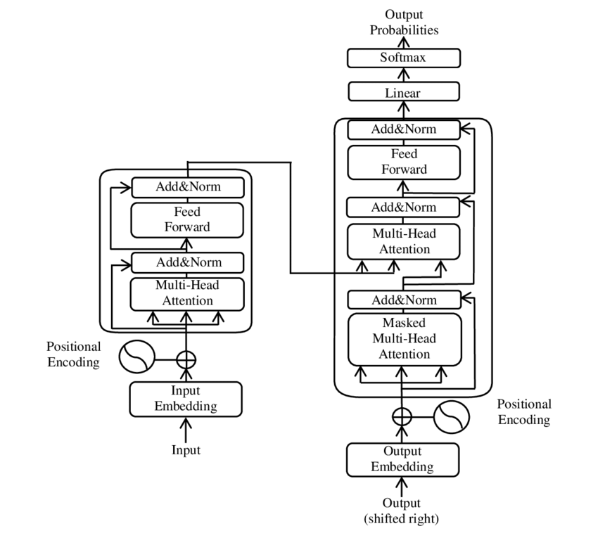

What a large language model is
A large language model is a very big neural network whose main job is to guess what text comes next. It is trained on a huge amount of writing, and from that it learns how words usually follow each other.

Do all language models use both parts of this diagram?
No. The diagram shows the original encoder-decoder transformer. Some language models use only the decoder portion to predict the next token.
Text becomes tokens
The model cannot read letters. Text is first cut into tokens, which are usually a word or a piece of a word, and every token is turned into a number. A normal sentence might become eight to twelve tokens. This is why these models are measured in tokens instead of words.
Transformers and attention
The design behind modern language models is called a transformer. Its main idea is attention. While it works on one token, the model checks how important every other token in the passage is to that one. That is how it keeps track of what a sentence is really about.
Training and fine tuning
Pre-training happens once and costs the most. The model reads an enormous amount of text and keeps practicing the next word guess. Nothing has to be labelled, because the text itself gives the answer.
Fine tuning happens afterwards and is much smaller. The trained model gets a little more training on a narrow set of examples so it follows instructions or works on one subject.